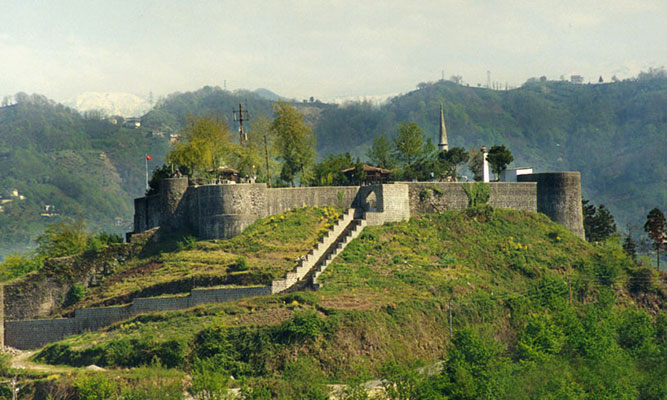

Things to See & Do

Known throughout the world as the capital of tea, Discover the city’s heritage and how it has grown to be the progressive hub it is today with a 90 minute bus tour.
The 15 stop hop-on hop-off tour has been carefully planned to take you round some of Rize’s key sights including Ziraat-Botanik Cay Bahcesi, Rize Castle, Museum of Rize and The factory of Rize's cloth.
There is one main tour route with recorded commentary in Turkish. For other languages there is a free app which can be downloaded from the App Store and Google Play.